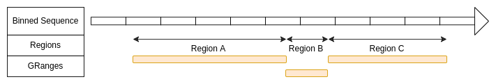
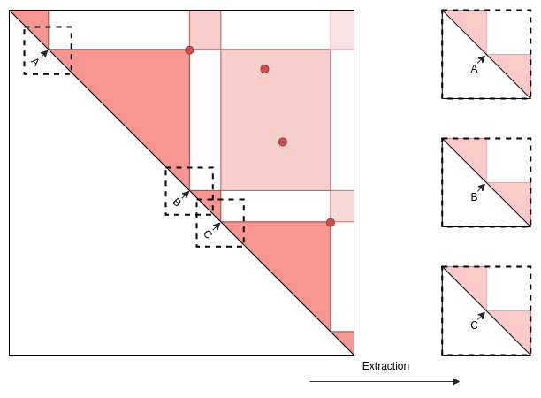
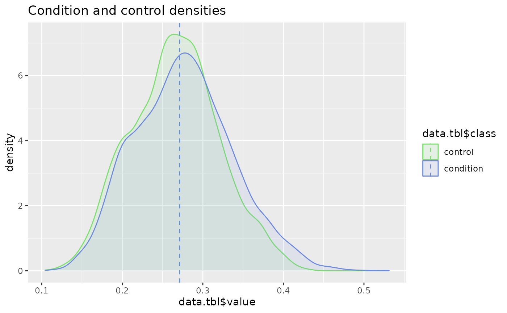

Genomic2DTK - In-depth tutorial
Nicolas Chanard
2022-11-07
Source:vignettes/Genomic2DTK.Rmd
Genomic2DTK.RmdLibrary
Install libraries
remotes::install_github("NChanard/Genomic2DTK")
remotes::install_github("NChanard/GenomicED")Load libraries
library(Genomic2DTK)
#> Loading required package: InteractionSet
#> Loading required package: GenomicRanges
#> Loading required package: stats4
#> Loading required package: BiocGenerics
#>
#> Attaching package: 'BiocGenerics'
#> The following objects are masked from 'package:stats':
#>
#> IQR, mad, sd, var, xtabs
#> The following objects are masked from 'package:base':
#>
#> anyDuplicated, append, as.data.frame, basename, cbind, colnames,
#> dirname, do.call, duplicated, eval, evalq, Filter, Find, get, grep,
#> grepl, intersect, is.unsorted, lapply, Map, mapply, match, mget,
#> order, paste, pmax, pmax.int, pmin, pmin.int, Position, rank,
#> rbind, Reduce, rownames, sapply, setdiff, sort, table, tapply,
#> union, unique, unsplit, which.max, which.min
#> Loading required package: S4Vectors
#>
#> Attaching package: 'S4Vectors'
#> The following objects are masked from 'package:base':
#>
#> expand.grid, I, unname
#> Loading required package: IRanges
#> Loading required package: GenomeInfoDb
#> Loading required package: SummarizedExperiment
#> Loading required package: MatrixGenerics
#> Loading required package: matrixStats
#>
#> Attaching package: 'MatrixGenerics'
#> The following objects are masked from 'package:matrixStats':
#>
#> colAlls, colAnyNAs, colAnys, colAvgsPerRowSet, colCollapse,
#> colCounts, colCummaxs, colCummins, colCumprods, colCumsums,
#> colDiffs, colIQRDiffs, colIQRs, colLogSumExps, colMadDiffs,
#> colMads, colMaxs, colMeans2, colMedians, colMins, colOrderStats,
#> colProds, colQuantiles, colRanges, colRanks, colSdDiffs, colSds,
#> colSums2, colTabulates, colVarDiffs, colVars, colWeightedMads,
#> colWeightedMeans, colWeightedMedians, colWeightedSds,
#> colWeightedVars, rowAlls, rowAnyNAs, rowAnys, rowAvgsPerColSet,
#> rowCollapse, rowCounts, rowCummaxs, rowCummins, rowCumprods,
#> rowCumsums, rowDiffs, rowIQRDiffs, rowIQRs, rowLogSumExps,
#> rowMadDiffs, rowMads, rowMaxs, rowMeans2, rowMedians, rowMins,
#> rowOrderStats, rowProds, rowQuantiles, rowRanges, rowRanks,
#> rowSdDiffs, rowSds, rowSums2, rowTabulates, rowVarDiffs, rowVars,
#> rowWeightedMads, rowWeightedMeans, rowWeightedMedians,
#> rowWeightedSds, rowWeightedVars
#> Loading required package: Biobase
#> Welcome to Bioconductor
#>
#> Vignettes contain introductory material; view with
#> 'browseVignettes()'. To cite Bioconductor, see
#> 'citation("Biobase")', and for packages 'citation("pkgname")'.
#>
#> Attaching package: 'Biobase'
#> The following object is masked from 'package:MatrixGenerics':
#>
#> rowMedians
#> The following objects are masked from 'package:matrixStats':
#>
#> anyMissing, rowMedians
library(GenomicED)Test dataset
Test dataset originates from Drosophila melanogaster. It contains HiC data of chromosomes 2L and 2R in control and BEAF32 KD conditions, a subset of Beaf32 ChIP-seq peaks and a subset of TSS from TxDb.Dmelanogaster.UCSC.dm6.ensGene.
HiC test dataset
HiC_ctrl.gnp
HiC data in control condition (depletion of inexistent Luciferase (Luc) protein) in the GRangePairs format (bedpe) with 1KBp resolution.
data("HiC_ctrl.gnp")View
| seq | start | end | strand | seq | start | end | strand | name | score |
|---|---|---|---|---|---|---|---|---|---|
| 2L | 73001 | 74000 |
|
2L | 74001 | 75000 |
|
73000_74000 | 0.9 |
| 2L | 74001 | 75000 |
|
2L | 74001 | 75000 |
|
74000_74000 | 1.8 |
| 2L | 75001 | 76000 |
|
2L | 75001 | 76000 |
|
75000_75000 | 1.7 |
HiC.gnp
HiC data in Beaf-32 depleted condition in the GRangePairs format (bedpe) with 1KBp resolution.
data("HiC.gnp")View
| seq | start | end | strand | seq | start | end | strand | name | score |
|---|---|---|---|---|---|---|---|---|---|
| 2L | 73001 | 74000 |
|
2L | 73001 | 74000 |
|
73000_73000 | 2.3 |
| 2L | 73001 | 74000 |
|
2L | 74001 | 75000 |
|
73000_74000 | 1.1 |
| 2L | 73001 | 74000 |
|
2L | 75001 | 76000 |
|
73000_75000 | 2.9 |
Anchors, baits and constraints: 1D and 2D coordinates test dataset
ChIP-seq peaks: anchors_Peaks.gnr
ChIPseq data of Beaf-32 protein in wild type condition in GRanges format (bed).
data("anchors_Peaks.gnr")View
| seq | start | end | strand | name | score |
|---|---|---|---|---|---|
| 2L | 35594 | 35725 |
|
Beaf32_2 | 76 |
| 2L | 47296 | 47470 |
|
Beaf32_3 | 44 |
| 2L | 65770 | 65971 |
|
Beaf32_5 | 520 |
Reference annontation: baits_Peaks.gnr
Data from the UCSC data base.
data("baits_Peaks.gnr")View
| seq | start | end | strand | name | class |
|---|---|---|---|---|---|
| 2L | 71757 | 71757 |
|
FBgn0031213 | active |
| 2L | 76348 | 76348 |
|
FBgn0031214 | inactive |
| 2L | 106903 | 106903 |
|
FBgn0005278 | active |
Domains annotation: domains.gnr
Data from TAD calling on HIC data in wild type (bed or bedpe format) (F. Ramirez, 2018).
data("domains.gnr")View
| seq | start | end | strand | name | score | class |
|---|---|---|---|---|---|---|
| 2L | 73104 | 94543 |
|
Tad_1 | 3 | active |
| 2L | 94544 | 102930 |
|
Tad_2 | 8 | active |
| 2L | 102931 | 121473 |
|
Tad_3 | 8 | active |
Additional genome informations
General genomic informations used by the functions all along the process are a data.frame containing chromosomes names and sized and the binSize, corresponding to the HiC matrices resolution. We complete the data with 2L and 2R chromosome sizes and HiC map resolution.
seqlengths.num <- c('2L'=23513712, '2R'=25286936)
chromSize.dtf <- data.frame(
seqnames = names(seqlengths.num ),
seqlengths = seqlengths.num
)
binSize.num <- 1000Convert HiC bedpe // this section will be replaced by Import.hic function
HiC Control
data(HiC_ctrl.cmx_lst)HiC under Beaf depletion
data(HiC.cmx_lst)HiC data format: Contact matrix list (cmx_lst) structure
Each element of the list corresponds to a Contactmatrix object
(dgCMatrix object, sparse matrix format) storing contact frequencies for
one chromosomes (cis-interactions, ex: “2L_2L”) or between two
chromosomes (trans-interactions, ex: “2L_2R”).
HiC data format is based on InteractionSet
package, for more details on sparse matrices format, see Matrix.
HiC_ctrl.cmx_lst[1:2]
#> $`2L_2L`
#> class: ContactMatrix
#> dim: 23514 23514
#> type: dgCMatrix
#> rownames: NULL
#> colnames: NULL
#> metadata(5): name type kind symmetric resolution
#> regions: 23514
#>
#> $`2R_2R`
#> class: ContactMatrix
#> dim: 25287 25287
#> type: dgCMatrix
#> rownames: NULL
#> colnames: NULL
#> metadata(5): name type kind symmetric resolution
#> regions: 25287
#>
class(HiC_ctrl.cmx_lst[["2L_2L"]]@matrix)
#> [1] "dgCMatrix"
#> attr(,"package")
#> [1] "Matrix"
#>
str(HiC_ctrl.cmx_lst[["2L_2L"]]@matrix)
#> Formal class 'dgCMatrix' [package "Matrix"] with 6 slots
#> ..@ i : int [1:617185] 73 74 75 75 74 77 78 78 79 73 ...
#> ..@ p : int [1:23515] 0 0 0 0 0 0 0 0 0 0 ...
#> ..@ Dim : int [1:2] 23514 23514
#> ..@ Dimnames:List of 2
#> .. ..$ : NULL
#> .. ..$ : NULL
#> ..@ x : num [1:617185] 0.899 1.772 1.729 2.185 2.752 ...
#> ..@ factors : list()
#>
HiC_ctrl.cmx_lst[["2L_2L"]]@matrix[101:110,101:110]View
| bin 101 | bin 102 | bin 103 | bin 104 | bin 105 | bin 106 | bin 107 | bin 108 | bin 109 | bin 110 | |
|---|---|---|---|---|---|---|---|---|---|---|
| bin 101 | 0 | 0.9 | 0 | 0.0 | 0 | 2.2 | 0.0 | 0.0 | 0.0 | 0.0 |
| bin 102 | 0 | 0.0 | 0 | 1.6 | 0 | 0.0 | 0.0 | 0.0 | 1.3 | 0.0 |
| bin 103 | 0 | 0.0 | 0 | 0.0 | 0 | 2.1 | 2.1 | 0.0 | 0.0 | 0.0 |
| bin 104 | 0 | 0.0 | 0 | 0.0 | 0 | 0.0 | 0.0 | 3.6 | 0.9 | 2.1 |
| bin 105 | 0 | 0.0 | 0 | 0.0 | 0 | 2.3 | 0.0 | 0.0 | 0.0 | 3.3 |
| bin 106 | 0 | 0.0 | 0 | 0.0 | 0 | 0.0 | 0.0 | 0.0 | 0.0 | 0.0 |
| bin 107 | 0 | 0.0 | 0 | 0.0 | 0 | 0.0 | 2.3 | 0.0 | 0.0 | 0.0 |
| bin 108 | 0 | 0.0 | 0 | 0.0 | 0 | 0.0 | 0.0 | 0.0 | 0.6 | 0.0 |
| bin 109 | 0 | 0.0 | 0 | 0.0 | 0 | 0.0 | 0.0 | 0.0 | 1.5 | 0.0 |
| bin 110 | 0 | 0.0 | 0 | 0.0 | 0 | 0.0 | 0.0 | 0.0 | 0.0 | 1.7 |
Acces to Contact matrix list attributes:
attributes(HiC_ctrl.cmx_lst)
#> $names
#> [1] "2L_2L" "2R_2R"
#>
#> $resolution
#> [1] 1000
#>
#> $chromSize
#> seqnames seqlengths dimension
#> 1 2L 23513712 23514
#> 2 2R 25286936 25287
#>
#> $matricesKind
#> name type kind symmetric
#> 1 2L_2L cis U TRUE
#> 2 2R_2R cis U TRUE
#>Acces to Contact matrix metadata:
S4Vectors::metadata(HiC_ctrl.cmx_lst[["2L_2L"]])
#> $name
#> [1] "2L_2L"
#>
#> $type
#> [1] "cis"
#>
#> $kind
#> [1] "U"
#>
#> $symmetric
#> [1] TRUE
#>
#> $resolution
#> [1] 1000
#>-
resolution : the resolution of the HiC map.
-
chromSize : the size of the chromosomes in the
tibble format.
-
seqnames : the sequence name (chromosome name).
-
seqlengths : the sequence length in base pairs.
-
dimension : the sequence length in base bins
-
seqnames : the sequence name (chromosome name).
-
matricesKind : the kind of matrix that composes the
list in the tibble format.
- name : the matrix name.
-
type : interaction type. “Cis” for interactions on
the same chromosome and “Trans” for interactions on different
chromosomes.
-
kind : the matrix kind. U for upper triangle matrices, L
for lower triangle matrices, NA for rectangular or square matrices.
See
- symmetric : a boolean that indicates whether the matrix is symmetric (lower triangle identical to upper triangle).
Genomic Features Indexing
Indexing
Indexing example 1: Anchors from Beaf32 ChIP-seq binding sites (peak calling output bed file)
anchors_Index.gnr <- IndexFeatures(
gRange.gnr_lst = list(Beaf=anchors_Peaks.gnr),
constraint.gnr = domains.gnr,
chromSize.dtf = chromSize.dtf,
binSize.num = binSize.num,
variablesName.chr_vec = "score",
method.chr = "max",
cores.num = 1,
verbose.bln = FALSE
)View
| seqnames | start | end | width | strand | name | bin | constraint | Beaf.score | Beaf.name | Beaf.bln |
|---|---|---|---|---|---|---|---|---|---|---|
| 2L | 73001 | 74000 | 1000 |
|
2L:74:Tad_1 | 2L:74 | Tad_1 | 205 | Beaf32_8 | 1 |
| 2L | 74001 | 75000 | 1000 |
|
2L:75:Tad_1 | 2L:75 | Tad_1 | 205 | Beaf32_8 | 1 |
| 2L | 102001 | 103000 | 1000 |
|
2L:103:Tad_2 | 2L:103 | Tad_2 | 1830 | Beaf32_11 | 1 |
Indexing example 2: Baits from TSS (transcription start sites reference annotation)
baits_Index.gnr <- IndexFeatures(
gRange.gnr_lst = list(Tss=baits_Peaks.gnr),
constraint.gnr = domains.gnr,
chromSize.dtf = chromSize.dtf,
binSize.num = binSize.num,
variablesName.chr_vec = "score",
method.chr = "max",
cores.num = 1,
verbose.bln = FALSE
)View
| seqnames | start | end | width | strand | name | bin | constraint | Tss.class | Tss.name | Tss.bln |
|---|---|---|---|---|---|---|---|---|---|---|
| 2L | 76001 | 77000 | 1000 |
|
2L:77:Tad_1 | 2L:77 | Tad_1 | inactive | FBgn0031214 | 1 |
| 2L | 106001 | 107000 | 1000 |
|
2L:107:Tad_3 | 2L:107 | Tad_3 | active | FBgn0026787, FBgn0005278 | 1 |
| 2L | 116001 | 117000 | 1000 |
|
2L:117:Tad_3 | 2L:117 | Tad_3 | active | FBgn0031219 | 1 |
Filter or subset indexed features:
By using features names and bin IDs, it is possible to filter or subset indexed features. Example: Subset indexed TSS that are not in the same bin than an indexed Beaf32 peak.
non_Overlaps.ndx <- SuperTK::NotIn(baits_Index.gnr$bin,anchors_Index.gnr$bin)
baits_Index.gnr <- baits_Index.gnr[non_Overlaps.ndx,]View
| seqnames | start | end | width | strand | name | bin | constraint | Tss.class | Tss.name | Tss.bln |
|---|---|---|---|---|---|---|---|---|---|---|
| 2L | 76001 | 77000 | 1000 |
|
2L:77:Tad_1 | 2L:77 | Tad_1 | inactive | FBgn0031214 | 1 |
| 2L | 106001 | 107000 | 1000 |
|
2L:107:Tad_3 | 2L:107 | Tad_3 | active | FBgn0026787, FBgn0005278 | 1 |
| 2L | 116001 | 117000 | 1000 |
|
2L:117:Tad_3 | 2L:117 | Tad_3 | active | FBgn0031219 | 1 |
Tips
- It is possible to index multiple features in the same time by
submitting a named list of GRanges. Names given in the list of GRanges
are then used to filter indexed features and pairs.
- If contraint.gnr is set, anchors and baits will be paired when
located within the same region only. If contraint.gnr is NULL,
chromosomes are used as constraints.
- When multiples ranges are in a same bin (ex: 3 ChIP-seq peaks in the
same 10kb bin), associated numeric variables in metadata
(
variablesName.chr_vec) can be summarized according to the defined method (method.chr), Example: Maximum peak score of the bin is kept in metadata columnscore.
Search Pairs
Pairing
SearchPairs function takes as input one or two indexed features and returns all putative pairs within the same constraint (ex: wihtin the same TAD). If only one indexed features is set in indexAnchor.gnr, SearchPairs will return symetrical homotypic pairs A<->A, if indexAnchor.gnr and indexBait.gnr are set, it will return asymetrical heterotypic pairs A<->B
interactions.gni <- SearchPairs(
indexAnchor.gnr = anchors_Index.gnr,
indexBait.gnr = baits_Index.gnr,
minDist.num = NULL,
maxDist.num = NULL,
cores.num = 1,
verbose.bln = FALSE
)View
| seq | start | end | seq | start | end | name | constraint | distance | orientation | submatrix.name | name | bin | Beaf.name | Beaf.score | Beaf.bln | name | bin | Tss.name | Tss.class | Tss.bln | |
|---|---|---|---|---|---|---|---|---|---|---|---|---|---|---|---|---|---|---|---|---|---|
| 2L:74_2L:77 | 2L | 73001 | 74000 | 2L | 76001 | 77000 | 2L:74_2L:77 | Tad_1 | 3000 | TRUE | 2L:74_2L:77 | 2L:74:Tad_1 | 2L:74 | Beaf32_8 | 205 | 1 | 2L:77:Tad_1 | 2L:77 | FBgn0031214 | inactive | 1 |
| 2L:75_2L:77 | 2L | 74001 | 75000 | 2L | 76001 | 77000 | 2L:75_2L:77 | Tad_1 | 2000 | TRUE | 2L:75_2L:77 | 2L:75:Tad_1 | 2L:75 | Beaf32_8 | 205 | 1 | 2L:77:Tad_1 | 2L:77 | FBgn0031214 | inactive | 1 |
| 2L:115_2L:107 | 2L | 114001 | 115000 | 2L | 106001 | 107000 | 2L:115_2L:107 | Tad_3 | 8000 | FALSE | 2L:107_2L:115 | 2L:115:Tad_3 | 2L:115 | Beaf32_14 | 1707 | 1 | 2L:107:Tad_3 | 2L:107 | FBgn0026787, FBgn0005278 | active | 1 |
Extractions
Case 1: Long-range interactions between two distal anchors.

Interactions defined with GInteraction or Pairs GRanges.
In extracted matrices, the middle of Y axis corresponds to the center of the first element and interact with the center of second element in the middle of X axis.

interactions_PFmatrix.lst <- ExtractSubmatrix(
feature.gn = interactions.gni,
hic.cmx_lst = HiC_ctrl.cmx_lst,
referencePoint.chr = "pf",
matriceDim.num = 41,
cores.num = 1,
verbose.bln = FALSE
)Interactions defined with GRanges.
The middle of Y axis corresponds to the start of the range and interact with the middle of X axis which corresponds with the end of the ranges.

domains_PFmatrix.lst <- ExtractSubmatrix(
feature.gn = domains.gnr,
hic.cmx_lst = HiC_ctrl.cmx_lst,
referencePoint.chr = "pf",
matriceDim.num = 41,
cores.num = 1,
verbose.bln = FALSE
)Case 2: Interactions around genomic regions or domains.
In this case, extracted matrices are resized and scaled in order to fit all regions to the same number of bins.

Regions defined with GInteraction object or Pairs GRanges
The region’s start is defined by the center of the first element and
the region’s end by the center of the second element.
interactions_RFmatrix_ctrl.lst <- ExtractSubmatrix(
feature.gn = interactions.gni,
hic.cmx_lst = HiC_ctrl.cmx_lst,
res.num = NULL,
referencePoint.chr = "rf",
matriceDim.num = 101,
cores.num = 1,
verbose.bln = FALSE
)Regions defined with GRanges
The regions are directly defined by the ranges of GRanges object.

domains_RFmatrix.lst <- ExtractSubmatrix(
feature.gn = domains.gnr,
hic.cmx_lst = HiC_ctrl.cmx_lst,
referencePoint.chr = "rf",
matriceDim.num = 101,
cores.num = 1,
verbose.bln = FALSE
)Case 3: Interactions along the diagonal.

Example with TAD:
Step 1: generate a GRanges object of TAD boundaries by concatenating starts and ends of TADs.
domains_Border.gnr <- c(
GenomicRanges::resize(domains.gnr, 1, "start"),
GenomicRanges::resize(domains.gnr, 1, "end" )
) |>
sort()Step 2: Filter and reduce TAD boundaries GRanges object according to HiC resolution (binSize) + Store TAD names.
domains_Border_Bin.gnr <- GenomicTK::BinGRanges(
gRange.gnr = domains_Border.gnr,
binSize.num = binSize.num,
verbose.bln = FALSE
)
domains_Border_Bin.gnr$subname <- domains_Border_Bin.gnr$name
domains_Border_Bin.gnr$name <- domains_Border_Bin.gnr$bin
domains_Border_Bin.gnrView
| seq | start | end | strand | name | score | class | bin | subname |
|---|---|---|---|---|---|---|---|---|
| 2L | 73001 | 74000 |
|
2L:74 | 3 | active | 2L:74 | Tad_1 |
| 2L | 94001 | 95000 |
|
2L:95 | 3, 8 | active | 2L:95 | Tad_1, Tad_2 |
| 2L | 102001 | 103000 |
|
2L:103 | 8 | active | 2L:103 | Tad_2, Tad_3 |
Now we have a GRanges object. And for the exemples below we will need
the same informations but in an GInteraction object.
### ICI JE NE COMPPREND PAS CE QU ON FAIT,
domains_Border_Bin.gni <- InteractionSet::GInteractions(domains_Border_Bin.gnr,domains_Border_Bin.gnr)View
| seq | start | end | name | score | class | bin | subname | seq | start | end | name | score | class | bin | subname |
|---|---|---|---|---|---|---|---|---|---|---|---|---|---|---|---|
| 2L | 73001 | 74000 | 2L:74 | 3 | active | 2L:74 | Tad_1 | 2L | 73001 | 74000 | 2L:74 | active | 3 | 2L:74 | Tad_1 |
| 2L | 94001 | 95000 | 2L:95 | 3, 8 | active | 2L:95 | Tad_1, Tad_2 | 2L | 94001 | 95000 | 2L:95 | active | 3, 8 | 2L:95 | Tad_1, Tad_2 |
| 2L | 102001 | 103000 | 2L:103 | 8 | active | 2L:103 | Tad_2, Tad_3 | 2L | 102001 | 103000 | 2L:103 | active | 8 | 2L:103 | Tad_2, Tad_3 |
Ponctual interactions defined with GRanges
Here the start and the end of each ranges are in a same bin.

border_PFmatrix.lst <- ExtractSubmatrix(
feature.gn = domains_Border_Bin.gnr,
hic.cmx_lst = HiC_ctrl.cmx_lst,
referencePoint.chr = "pf",
matriceDim.num = 101,
verbose.bln = FALSE
)Ponctual interactions defined with GInteractions
Here the first element (blue on scheme) is in the same bin as the second (red on scheme).

border_PFmatrix.lst <- ExtractSubmatrix(
feature.gn = domains_Border_Bin.gni,
hic.cmx_lst = HiC_ctrl.cmx_lst,
referencePoint.chr = "pf",
matriceDim.num = 101,
verbose.bln = FALSE
)Filtrations
The modularity of the workflow allows the user to filter interactions, pairs or extracted submatrices at any step of the analysis process. FilterInteractions() function takes as input a GInteraction object or a list of submatrices, a list defining targets to filter and a selection function defining how target elements will be filtered.
Target list definition:
Target list must have a particular structure. First it is a named list. Each name of each element must be the name of column in the GInteraction that you want filter (or in the attributes “interactions” of the matrices list you want filter. Then each element must be a character list to match to this column or a function that will test each row in the column and return a bolean.
structureTarget.lst <- list(
first_colname_of_GInteraction = c("value"),
second_colname_of_GInteraction = function(eachElement){min_th<value && value<max_th}
)Interactions, pairs or extracted submatrices are filtered by metadata elements inherited from GRanges objects used in SearchPairs(). Those metadata are stored in the attributes of the submatrices list and are accessible as follow:
attributes(interactions_RFmatrix_ctrl.lst)$interactions
names(S4Vectors::mcols(attributes(interactions_RFmatrix_ctrl.lst)$interactions))View
| seq | start | end | seq | start | end | name | constraint | distance | orientation | submatrix.name | name | bin | Beaf.name | Beaf.score | Beaf.bln | name | bin | Tss.name | Tss.class | Tss.bln | |
|---|---|---|---|---|---|---|---|---|---|---|---|---|---|---|---|---|---|---|---|---|---|
| 2L:74_2L:77 | 2L | 73001 | 74000 | 2L | 76001 | 77000 | 2L:74_2L:77 | Tad_1 | 3000 | TRUE | 2L:74_2L:77 | 2L:74:Tad_1 | 2L:74 | Beaf32_8 | 205 | 1 | 2L:77:Tad_1 | 2L:77 | FBgn0031214 | inactive | 1 |
| 2L:115_2L:107 | 2L | 114001 | 115000 | 2L | 106001 | 107000 | 2L:115_2L:107 | Tad_3 | 8000 | FALSE | 2L:107_2L:115 | 2L:115:Tad_3 | 2L:115 | Beaf32_14 | 1707 | 1 | 2L:107:Tad_3 | 2L:107 | FBgn0026787, FBgn0005278 | active | 1 |
| 2L:121_2L:107 | 2L | 120001 | 121000 | 2L | 106001 | 107000 | 2L:121_2L:107 | Tad_3 | 14000 | FALSE | 2L:107_2L:121 | 2L:121:Tad_3 | 2L:121 | Beaf32_15 | 484 | 1 | 2L:107:Tad_3 | 2L:107 | FBgn0026787, FBgn0005278 | active | 1 |
| 2L:121_2L:117 | 2L | 120001 | 121000 | 2L | 116001 | 117000 | 2L:121_2L:117 | Tad_3 | 4000 | FALSE | 2L:117_2L:121 | 2L:121:Tad_3 | 2L:121 | Beaf32_15 | 484 | 1 | 2L:117:Tad_3 | 2L:117 | FBgn0031219 | active | 1 |
| 2L:274_2L:268 | 2L | 273001 | 274000 | 2L | 267001 | 268000 | 2L:274_2L:268 | Tad_10 | 6000 | FALSE | 2L:268_2L:274 | 2L:274:Tad_10 | 2L:274 | Beaf32_39 | 210 | 1 | 2L:268:Tad_10 | 2L:268 | FBgn0031239 | inactive | 1 |
| 2L:278_2L:268 | 2L | 277001 | 278000 | 2L | 267001 | 268000 | 2L:278_2L:268 | Tad_10 | 10000 | FALSE | 2L:268_2L:278 | 2L:278:Tad_10 | 2L:278 | Beaf32_41 | 1641 | 1 | 2L:268:Tad_10 | 2L:268 | FBgn0031239 | inactive | 1 |
| 2L:274_2L:279 | 2L | 273001 | 274000 | 2L | 278001 | 279000 | 2L:274_2L:279 | Tad_10 | 5000 | TRUE | 2L:274_2L:279 | 2L:274:Tad_10 | 2L:274 | Beaf32_39 | 210 | 1 | 2L:279:Tad_10 | 2L:279 | FBgn0086855 | active | 1 |
| 2L:306_2L:320 | 2L | 305001 | 306000 | 2L | 319001 | 320000 | 2L:306_2L:320 | Tad_13 | 14000 | TRUE | 2L:306_2L:320 | 2L:306:Tad_13 | 2L:306 | Beaf32_48 | 52 | 1 | 2L:320:Tad_13 | 2L:320 | FBgn0031248 | inactive | 1 |
| 2L:471_2L:422 | 2L | 470001 | 471000 | 2L | 421001 | 422000 | 2L:471_2L:422 | Tad_17 | 49000 | FALSE | 2L:422_2L:471 | 2L:471:Tad_17 | 2L:471 | Beaf32_62 | 37 | 1 | 2L:422:Tad_17 | 2L:422 | FBgn0031253 | active | 1 |
| 2L:472_2L:422 | 2L | 471001 | 472000 | 2L | 421001 | 422000 | 2L:472_2L:422 | Tad_17 | 50000 | FALSE | 2L:422_2L:472 | 2L:472:Tad_17 | 2L:472 | Beaf32_62 | 37 | 1 | 2L:422:Tad_17 | 2L:422 | FBgn0031253 | active | 1 |
Example of target list:
In this example, Pairs will be filtered on anchor.Beaf.name,
bait.Tss.name, name (which correpond to submatrix IDs) and distance. The
aim of the example is to filter Pairs or submatrices that have: 1.
“Beaf32_8” and “Beaf32_15” in anchor.Beaf.name 2.
“FBgn0031214” and “FBgn0005278” in bait.Tss.name
3. distance exactly equal to 14000 or 3000
And to exclude Pairs or submatrices that have: 4. “2L:74_2L:77” in
name
Selection Function definition:
The selection function defines which operations (union(), intersect(), setdiff()…) are done to filter the set of Pairs with target elements. For more operation examples, see Selection function tips and examples section.
Filtration with selection
Example of GInteraction object filtration
With a GInteraction object as input, FilterInteractions() will return the indices of filtered elements.
With the target.lst and selection.fun defined above:
FilterInteractions(
interarctions.gni = attributes(interactions_RFmatrix_ctrl.lst)$interactions,
target.lst = target.lst,
selection.fun = selection.fun
) |>
str()
#> int 3names of 4th interaction is:
attributes(interactions_RFmatrix_ctrl.lst)$interactions$name[4]
#> [1] "2L:121_2L:117"Example of Matrices list filtration
With a matrices list as input, FilterInteractions() will return the filtered matrices list, with updated attributes.
With the target.lst and selection.fun defined above:
filtred_interactions_RFmatrix_ctrl.lst <- FilterInteractions(
matrices.lst = interactions_RFmatrix_ctrl.lst,
target.lst = target.lst,
selection.fun = selection.fun
)Specific case 1: Only one target and no selection
For example, we want to filter the top 100 first elements, so we target the 100 first names
GInteraction filtration
FilterInteractions(
interarctions.gni = attributes(interactions_RFmatrix_ctrl.lst)$interactions,
target.lst = first100_target.lst,
selection.fun = NULL
) |> str()
#> Named int [1:100] 1 2 3 4 5 6 7 8 9 10 ...
#> - attr(*, "names")= chr [1:100] "submatrix.name1" "submatrix.name2" "submatrix.name3" "submatrix.name4" ...Matrices list filtration
first100_interactions_RFmatrix_ctrl.lst <- FilterInteractions(
matrices.lst = interactions_RFmatrix_ctrl.lst,
target.lst = first100_target.lst,
selection.fun = NULL
)
attributes(first100_interactions_RFmatrix_ctrl.lst)$interactions
#> GInteractions object with 100 interactions and 15 metadata columns:
#> seqnames1 ranges1 seqnames2 ranges2
#> <Rle> <IRanges> <Rle> <IRanges>
#> 2L:74_2L:77 2L 73001-74000 --- 2L 76001-77000
#> 2L:115_2L:107 2L 114001-115000 --- 2L 106001-107000
#> 2L:121_2L:107 2L 120001-121000 --- 2L 106001-107000
#> 2L:121_2L:117 2L 120001-121000 --- 2L 116001-117000
#> 2L:274_2L:268 2L 273001-274000 --- 2L 267001-268000
#> ... ... ... ... ... ...
#> 2L:12515_2L:12498 2L 12514001-12515000 --- 2L 12497001-12498000
#> 2L:12516_2L:12498 2L 12515001-12516000 --- 2L 12497001-12498000
#> 2L:12515_2L:12508 2L 12514001-12515000 --- 2L 12507001-12508000
#> 2L:12516_2L:12508 2L 12515001-12516000 --- 2L 12507001-12508000
#> 2L:12515_2L:12509 2L 12514001-12515000 --- 2L 12508001-12509000
#> | name constraint distance orientation
#> | <character> <character> <integer> <logical>
#> 2L:74_2L:77 | 2L:74_2L:77 Tad_1 3000 TRUE
#> 2L:115_2L:107 | 2L:115_2L:107 Tad_3 8000 FALSE
#> 2L:121_2L:107 | 2L:121_2L:107 Tad_3 14000 FALSE
#> 2L:121_2L:117 | 2L:121_2L:117 Tad_3 4000 FALSE
#> 2L:274_2L:268 | 2L:274_2L:268 Tad_10 6000 FALSE
#> ... . ... ... ... ...
#> 2L:12515_2L:12498 | 2L:12515_2L:12498 Tad_310 17000 FALSE
#> 2L:12516_2L:12498 | 2L:12516_2L:12498 Tad_310 18000 FALSE
#> 2L:12515_2L:12508 | 2L:12515_2L:12508 Tad_310 7000 FALSE
#> 2L:12516_2L:12508 | 2L:12516_2L:12508 Tad_310 8000 FALSE
#> 2L:12515_2L:12509 | 2L:12515_2L:12509 Tad_310 6000 FALSE
#> submatrix.name anchor.bin anchor.name bait.bin
#> <character> <character> <character> <character>
#> 2L:74_2L:77 2L:74_2L:77 2L:74 2L:74:Tad_1 2L:77
#> 2L:115_2L:107 2L:107_2L:115 2L:115 2L:115:Tad_3 2L:107
#> 2L:121_2L:107 2L:107_2L:121 2L:121 2L:121:Tad_3 2L:107
#> 2L:121_2L:117 2L:117_2L:121 2L:121 2L:121:Tad_3 2L:117
#> 2L:274_2L:268 2L:268_2L:274 2L:274 2L:274:Tad_10 2L:268
#> ... ... ... ... ...
#> 2L:12515_2L:12498 2L:12498_2L:12515 2L:12515 2L:12515:Tad_310 2L:12498
#> 2L:12516_2L:12498 2L:12498_2L:12516 2L:12516 2L:12516:Tad_310 2L:12498
#> 2L:12515_2L:12508 2L:12508_2L:12515 2L:12515 2L:12515:Tad_310 2L:12508
#> 2L:12516_2L:12508 2L:12508_2L:12516 2L:12516 2L:12516:Tad_310 2L:12508
#> 2L:12515_2L:12509 2L:12509_2L:12515 2L:12515 2L:12515:Tad_310 2L:12509
#> bait.name anchor.Beaf.score anchor.Beaf.name
#> <character> <numeric> <list>
#> 2L:74_2L:77 2L:77:Tad_1 205 Beaf32_8
#> 2L:115_2L:107 2L:107:Tad_3 1707 Beaf32_14
#> 2L:121_2L:107 2L:107:Tad_3 484 Beaf32_15
#> 2L:121_2L:117 2L:117:Tad_3 484 Beaf32_15
#> 2L:274_2L:268 2L:268:Tad_10 210 Beaf32_39
#> ... ... ... ...
#> 2L:12515_2L:12498 2L:12498:Tad_310 44 Beaf32_900
#> 2L:12516_2L:12498 2L:12498:Tad_310 88 Beaf32_901
#> 2L:12515_2L:12508 2L:12508:Tad_310 44 Beaf32_900
#> 2L:12516_2L:12508 2L:12508:Tad_310 88 Beaf32_901
#> 2L:12515_2L:12509 2L:12509:Tad_310 44 Beaf32_900
#> anchor.Beaf.bln bait.Tss.class bait.Tss.name
#> <numeric> <character> <list>
#> 2L:74_2L:77 1 inactive FBgn0031214
#> 2L:115_2L:107 1 active FBgn0026787,FBgn0005278
#> 2L:121_2L:107 1 active FBgn0026787,FBgn0005278
#> 2L:121_2L:117 1 active FBgn0031219
#> 2L:274_2L:268 1 inactive FBgn0031239
#> ... ... ... ...
#> 2L:12515_2L:12498 1 inactive FBgn0051858
#> 2L:12516_2L:12498 1 inactive FBgn0051858
#> 2L:12515_2L:12508 1 inactive FBgn0262353
#> 2L:12516_2L:12508 1 inactive FBgn0262353
#> 2L:12515_2L:12509 1 inactive FBgn0263458
#> bait.Tss.bln
#> <numeric>
#> 2L:74_2L:77 1
#> 2L:115_2L:107 1
#> 2L:121_2L:107 1
#> 2L:121_2L:117 1
#> 2L:274_2L:268 1
#> ... ...
#> 2L:12515_2L:12498 1
#> 2L:12516_2L:12498 1
#> 2L:12515_2L:12508 1
#> 2L:12516_2L:12508 1
#> 2L:12515_2L:12509 1
#> -------
#> regions: 429 ranges and 0 metadata columns
#> seqinfo: 2 sequences from an unspecified genomeA selection of some matrices removes attributes.
attributes(interactions_RFmatrix_ctrl.lst[1:20])$interactions
#> NULLSpecific case 2: Sampling
nSample.num = 3
set.seed(123)
target.lst = list(name=sample(attributes(interactions_RFmatrix_ctrl.lst)$interactions$name,nSample.num))GInteraction sampling
FilterInteractions(
interarctions.gni = attributes(interactions_RFmatrix_ctrl.lst)$interactions,
target.lst = target.lst,
selection.fun = NULL
) |>
str()
#> Named int [1:3] 14 179 195
#> - attr(*, "names")= chr [1:3] "name1" "name2" "name3"Matrices list sampling
sampled_interactions_RFmatrix_ctrl.lst <- FilterInteractions(
matrices.lst = interactions_RFmatrix_ctrl.lst,
target.lst = target.lst,
selection.fun = NULL
)
attributes(sampled_interactions_RFmatrix_ctrl.lst)$interactions
#> GInteractions object with 3 interactions and 15 metadata columns:
#> seqnames1 ranges1 seqnames2 ranges2
#> <Rle> <IRanges> <Rle> <IRanges>
#> 2L:1178_2L:1174 2L 1177001-1178000 --- 2L 1173001-1174000
#> 2L:21574_2L:21492 2L 21573001-21574000 --- 2L 21491001-21492000
#> 2R:5672_2R:5653 2R 5671001-5672000 --- 2R 5652001-5653000
#> | name constraint distance orientation
#> | <character> <character> <integer> <logical>
#> 2L:1178_2L:1174 | 2L:1178_2L:1174 Tad_35 4000 FALSE
#> 2L:21574_2L:21492 | 2L:21574_2L:21492 Tad_486 82000 FALSE
#> 2R:5672_2R:5653 | 2R:5672_2R:5653 Tad_513 19000 FALSE
#> submatrix.name anchor.bin anchor.name bait.bin
#> <character> <character> <character> <character>
#> 2L:1178_2L:1174 2L:1174_2L:1178 2L:1178 2L:1178:Tad_35 2L:1174
#> 2L:21574_2L:21492 2L:21492_2L:21574 2L:21574 2L:21574:Tad_486 2L:21492
#> 2R:5672_2R:5653 2R:5653_2R:5672 2R:5672 2R:5672:Tad_513 2R:5653
#> bait.name anchor.Beaf.score anchor.Beaf.name
#> <character> <numeric> <list>
#> 2L:1178_2L:1174 2L:1174:Tad_35 921 Beaf32_130
#> 2L:21574_2L:21492 2L:21492:Tad_486 529 Beaf32_1349
#> 2R:5672_2R:5653 2R:5653:Tad_513 99 Beaf32_1462
#> anchor.Beaf.bln bait.Tss.class bait.Tss.name bait.Tss.bln
#> <numeric> <character> <list> <numeric>
#> 2L:1178_2L:1174 1 active FBgn0031318 1
#> 2L:21574_2L:21492 1 inactive FBgn0053837 1
#> 2R:5672_2R:5653 1 active FBgn0033028 1
#> -------
#> regions: 429 ranges and 0 metadata columns
#> seqinfo: 2 sequences from an unspecified genomeSpecific case 3: FilterInteractions() without selection function
Without any selection function, FilterInteractions() will return all indices corresponding to each target in the list. Then, the indices of interest can be selected in a second step.
GInteraction filtration
FilterInteractions(
interarctions.gni = attributes(interactions_RFmatrix_ctrl.lst)$interactions,
target.lst = target.lst,
selection.fun = NULL
) |>
str()
#> Named int [1:3] 14 179 195
#> - attr(*, "names")= chr [1:3] "name1" "name2" "name3"Matrices list filtration
FilterInteractions(
matrices.lst = interactions_RFmatrix_ctrl.lst,
target.lst = target.lst,
selection.fun = NULL
) |>
str()
#> List of 3
#> $ 2L:1174_2L:1178 : num [1:101, 1:101] 0 NA NA NA NA NA NA NA NA NA ...
#> $ 2L:21492_2L:21574: num [1:101, 1:101] 0 NA NA NA NA NA NA NA NA NA ...
#> $ 2R:5653_2R:5672 : num [1:101, 1:101] 1.77 NA NA NA NA ...
#> - attr(*, "interactions")=Formal class 'GInteractions' [package "InteractionSet"] with 6 slots
#> .. ..@ anchor1 : int [1:3] 20 231 243
#> .. ..@ anchor2 : int [1:3] 19 226 240
#> .. ..@ regions :Formal class 'GRanges' [package "GenomicRanges"] with 7 slots
#> .. .. .. ..@ seqnames :Formal class 'Rle' [package "S4Vectors"] with 4 slots
#> .. .. .. .. .. ..@ values : Factor w/ 2 levels "2L","2R": 1 2
#> .. .. .. .. .. ..@ lengths : int [1:2] 236 193
#> .. .. .. .. .. ..@ elementMetadata: NULL
#> .. .. .. .. .. ..@ metadata : list()
#> .. .. .. ..@ ranges :Formal class 'IRanges' [package "IRanges"] with 6 slots
#> .. .. .. .. .. ..@ start : int [1:429] 73001 74001 76001 106001 114001 116001 120001 267001 273001 277001 ...
#> .. .. .. .. .. ..@ width : int [1:429] 1000 1000 1000 1000 1000 1000 1000 1000 1000 1000 ...
#> .. .. .. .. .. ..@ NAMES : NULL
#> .. .. .. .. .. ..@ elementType : chr "ANY"
#> .. .. .. .. .. ..@ elementMetadata: NULL
#> .. .. .. .. .. ..@ metadata : list()
#> .. .. .. ..@ strand :Formal class 'Rle' [package "S4Vectors"] with 4 slots
#> .. .. .. .. .. ..@ values : Factor w/ 3 levels "+","-","*": 3
#> .. .. .. .. .. ..@ lengths : int 429
#> .. .. .. .. .. ..@ elementMetadata: NULL
#> .. .. .. .. .. ..@ metadata : list()
#> .. .. .. ..@ seqinfo :Formal class 'Seqinfo' [package "GenomeInfoDb"] with 4 slots
#> .. .. .. .. .. ..@ seqnames : chr [1:2] "2L" "2R"
#> .. .. .. .. .. ..@ seqlengths : int [1:2] 23513712 25286936
#> .. .. .. .. .. ..@ is_circular: logi [1:2] NA NA
#> .. .. .. .. .. ..@ genome : chr [1:2] NA NA
#> .. .. .. ..@ elementMetadata:Formal class 'DFrame' [package "S4Vectors"] with 6 slots
#> .. .. .. .. .. ..@ rownames : NULL
#> .. .. .. .. .. ..@ nrows : int 429
#> .. .. .. .. .. ..@ elementType : chr "ANY"
#> .. .. .. .. .. ..@ elementMetadata: NULL
#> .. .. .. .. .. ..@ metadata : list()
#> .. .. .. .. .. ..@ listData : Named list()
#> .. .. .. ..@ elementType : chr "ANY"
#> .. .. .. ..@ metadata : list()
#> .. ..@ NAMES : chr [1:3] "2L:1178_2L:1174" "2L:21574_2L:21492" "2R:5672_2R:5653"
#> .. ..@ elementMetadata:Formal class 'DFrame' [package "S4Vectors"] with 6 slots
#> .. .. .. ..@ rownames : NULL
#> .. .. .. ..@ nrows : int 3
#> .. .. .. ..@ elementType : chr "ANY"
#> .. .. .. ..@ elementMetadata: NULL
#> .. .. .. ..@ metadata : list()
#> .. .. .. ..@ listData :List of 15
#> .. .. .. .. ..$ name : chr [1:3] "2L:1178_2L:1174" "2L:21574_2L:21492" "2R:5672_2R:5653"
#> .. .. .. .. ..$ constraint : chr [1:3] "Tad_35" "Tad_486" "Tad_513"
#> .. .. .. .. ..$ distance : int [1:3] 4000 82000 19000
#> .. .. .. .. ..$ orientation : logi [1:3] FALSE FALSE FALSE
#> .. .. .. .. ..$ submatrix.name : chr [1:3] "2L:1174_2L:1178" "2L:21492_2L:21574" "2R:5653_2R:5672"
#> .. .. .. .. ..$ anchor.bin : chr [1:3] "2L:1178" "2L:21574" "2R:5672"
#> .. .. .. .. ..$ anchor.name : chr [1:3] "2L:1178:Tad_35" "2L:21574:Tad_486" "2R:5672:Tad_513"
#> .. .. .. .. ..$ bait.bin : chr [1:3] "2L:1174" "2L:21492" "2R:5653"
#> .. .. .. .. ..$ bait.name : chr [1:3] "2L:1174:Tad_35" "2L:21492:Tad_486" "2R:5653:Tad_513"
#> .. .. .. .. ..$ anchor.Beaf.score: num [1:3] 921 529 99
#> .. .. .. .. ..$ anchor.Beaf.name :List of 3
#> .. .. .. .. .. ..$ : chr "Beaf32_130"
#> .. .. .. .. .. ..$ : chr "Beaf32_1349"
#> .. .. .. .. .. ..$ : chr "Beaf32_1462"
#> .. .. .. .. ..$ anchor.Beaf.bln : num [1:3] 1 1 1
#> .. .. .. .. ..$ bait.Tss.class : chr [1:3] "active" "inactive" "active"
#> .. .. .. .. ..$ bait.Tss.name :List of 3
#> .. .. .. .. .. ..$ : chr "FBgn0031318"
#> .. .. .. .. .. ..$ : chr "FBgn0053837"
#> .. .. .. .. .. ..$ : chr "FBgn0033028"
#> .. .. .. .. ..$ bait.Tss.bln : num [1:3] 1 1 1
#> .. ..@ metadata : list()
#> - attr(*, "target")=List of 1
#> ..$ name: chr [1:3] "2L:21574_2L:21492" "2L:1178_2L:1174" "2R:5672_2R:5653"
#> - attr(*, "resolution")= num 1000
#> - attr(*, "referencePoint")= chr "rf"
#> - attr(*, "matriceDim")= num 101
#> - attr(*, "shiftFactor")= num 1Tips
- Filter a GInterction object allows to cross the selected
index.
- Filter a matrices list without selection is better than filter the interaction attributes of the matrices list
Selection function tips and examples:
- Which is common to A, B and C
Reduce(intersect, list(a,b,c)) |> sort()
#> [1] "G"
intersect(a,b) |> intersect(c) |> sort()
#> [1] "G"- Which is in A and/or B and/or C
Reduce(union, list(a,b,c)) |> sort()
#> [1] "A" "B" "C" "D" "E" "F" "G"
union(a,b) |> union(c) |> sort()
#> [1] "A" "B" "C" "D" "E" "F" "G"- Which is only in A
- Which is common in A with B, and not in C
- What is common in A with B, plus all that is present in C
- What is common in C with all elements present in A and B
- Everything that is present in A and B but not in C
- Which is present only once
d <- c(a,b,c)
setdiff(d,d[duplicated(d)]) |> sort()
#> [1] "D" "E" "F"Orientation
ExtractSubmatrix() returns submatrices orientated according to 5’->3’ orientation of the chromosome. In the case of heterotypic or asymetric pairs (anchor != bait), anchors and baits are thus mixed on Y and X axis of the matrices.

OrienteMatrix() function allows to force all matrices to be orientated in a way that anchors will be systematically on Y axis and baits on X axis.

Acces orientation information
First, lets look how two matrices are oriented (column orientation of metadata of the interactions attribute). Below we can see that the first matrix is correctly oriented (value is TRUE) but not the second one.
attributes(first100_interactions_RFmatrix_ctrl.lst)$interactions$orientation[13:14]
#> [1] TRUE FALSE- The 13th matrice is well oriented, i.e. the anchor Beaf is
in Y axis and the bait TSS in X axis
- The 14th matrice is not well oriented, i.e. the bait TSS is in Y axis and the anchor Beaf in X axis
Orientation on matrices list
oriented_first100_interactions_RFmatrix_ctrl.lst <- OrienteMatrix(first100_interactions_RFmatrix_ctrl.lst)Quantifications
GetQuantif() function takes as input a list of submatrices and returns a vector of contact frequencies on a given area, compute with a given function:
Basic quantifications
the GetQuantif function has some default area and
function (see Genomic2DTK::GetQuantif).
-
area: Key word defining on which area the values
are extracted in each matrices.
- operation Key word defining which operation is done on extracted values for each matrices.
Example: Interactions values on the centered 3x3 square centred, averaged after removing all zeros.
center.num <- GetQuantif(
matrices.lst = oriented_first100_interactions_RFmatrix_ctrl.lst,
area.fun = "center",
operation.fun = "mean"
)Custom functions
The GetQuantif function also takes custom
area and operation in parameter.
-
area: function defining on which submatrix
coordinates the values are extracted in each matrices.
- operation function defining which operation is done on extracted values for each matrices.
Example: Interactions values on the matrice.mtx[33:35,67:69] area, averaged after removing all zeros.
GetQuantif(
matrices.lst = oriented_first100_interactions_RFmatrix_ctrl.lst,
area.fun = function(matrice.mtx){matrice.mtx[33:35,67:69]},
operation.fun = function(area.mtx){
area.mtx[which(area.mtx==0)]<-NA;
return(mean(area.mtx,na.rm=TRUE))
}
) |>
c() |>
unlist() |>
head()
#> 2L:74_2L:77 2L:115_2L:107 2L:121_2L:107 2L:121_2L:117 2L:274_2L:268
#> 0.01238601 0.04313207 1.01102006 0.03643152 1.69168994
#> 2L:278_2L:268
#> 1.48305411Particular cases:
Values naming
By default, returned values are named with submatrix ID. If name.chr is set with an element metadata column name from GInteraction attributes, values are returned values are named according to this element.
Example: Named quantifications with anchor.Beaf.name
namedCenter.num <- GetQuantif(
matrices.lst = oriented_first100_interactions_RFmatrix_ctrl.lst,
area.fun = "center",
operation.fun = "mean",
name.chr = "anchor.Beaf.name"
)Note that changing submatrix ID for other names can create names duplicates:
Example: The 46th matrix is correspond to two Beaf32 peaks, i.e. it has two anchor.Beaf.name| name | anchor.Beaf.name | |
|---|---|---|
| 45 | 2L:5909_2L:5941 | Beaf32_415 |
| 46 | 2L:5944_2L:5968 | Beaf32_417, Beaf32_418 |
| 47 | 2L:5945_2L:5968 | Beaf32_418 |
| 48 | 2L:6051_2L:6069 | Beaf32_430 |
| 49 | 2L:6066_2L:6069 | Beaf32_432 |
| 50 | 2L:6084_2L:6071 | Beaf32_435 |
By consequence, the value in center.num is duplicated in namedCenter.num
unlist(c(center.num))[45:50]
#> 2L:5909_2L:5941 2L:5944_2L:5968 2L:5945_2L:5968 2L:6051_2L:6069 2L:6066_2L:6069
#> 0.1871565 0.0000000 0.0000000 0.5279512 2.1392992
#> 2L:6084_2L:6071
#> 0.1096642
unlist(c(namedCenter.num))[45:51]
#> Beaf32_415 Beaf32_417 Beaf32_418 Beaf32_418 Beaf32_430 Beaf32_432 Beaf32_435
#> 0.1871565 0.0000000 0.0000000 0.0000000 0.5279512 2.1392992 0.1096642Duplicated value index are stored in attributes.
attributes(center.num)$duplicated
#> NULL
attributes(namedCenter.num)$duplicated
#> [1] 47One value extraction
GetQuantif(
matrices.lst = oriented_first100_interactions_RFmatrix_ctrl.lst,
area.fun = function(matrice.mtx){matrice.mtx[5,5]},
operation.fun = function(area.mtx){area.mtx}
) |>
c() |>
unlist() |>
head()
#> 2L:74_2L:77 2L:115_2L:107 2L:121_2L:107 2L:121_2L:117 2L:274_2L:268
#> 0.0000000 0.0000000 0.3403983 0.4351463 0.0000000
#> 2L:278_2L:268
#> 0.1806280Area extraction
GetQuantif(
matrices.lst = oriented_first100_interactions_RFmatrix_ctrl.lst,
area.fun = function(matrice.mtx){matrice.mtx[4:6,4:6]},
operation.fun = function(area){area}
) |>
c() |> head()
#> $`2L:74_2L:77`
#> [,1] [,2] [,3]
#> [1,] 0 0 0
#> [2,] NA 0 0
#> [3,] NA NA 0
#>
#> $`2L:115_2L:107`
#> [,1] [,2] [,3]
#> [1,] 0 0 0.1671591
#> [2,] NA 0 0.2228788
#> [3,] NA NA 0.1857323
#>
#> $`2L:121_2L:107`
#> [,1] [,2] [,3]
#> [1,] 0.3009771 0.7871710 1.2376943
#> [2,] NA 0.3403983 0.5352191
#> [3,] NA NA 0.0000000
#>
#> $`2L:121_2L:117`
#> [,1] [,2] [,3]
#> [1,] 0.6591566 0.5355647 0.4119729
#> [2,] NA 0.4351463 0.3347280
#> [3,] NA NA 0.2574830
#>
#> $`2L:274_2L:268`
#> [,1] [,2] [,3]
#> [1,] 0 0 0
#> [2,] NA 0 0
#> [3,] NA NA 0
#>
#> $`2L:278_2L:268`
#> [,1] [,2] [,3]
#> [1,] 0 0.2032066 0.5080164
#> [2,] NA 0.1806280 0.4515701
#> [3,] NA NA 0.2822313If is null operation.fun return values of the selected area without NA.
GetQuantif(
matrices.lst = oriented_first100_interactions_RFmatrix_ctrl.lst,
area.fun = function(matrice.mtx){matrice.mtx[4:6,4:6]},
operation.fun = NULL
) |>
c() |>
head()
#> $`2L:74_2L:77`
#> [1] 0 0 0 0 0 0
#>
#> $`2L:115_2L:107`
#> [1] 0.0000000 0.0000000 0.0000000 0.1671591 0.2228788 0.1857323
#>
#> $`2L:121_2L:107`
#> [1] 0.3009771 0.7871710 0.3403983 1.2376943 0.5352191 0.0000000
#>
#> $`2L:121_2L:117`
#> [1] 0.6591566 0.5355647 0.4351463 0.4119729 0.3347280 0.2574830
#>
#> $`2L:274_2L:268`
#> [1] 0 0 0 0 0 0
#>
#> $`2L:278_2L:268`
#> [1] 0.0000000 0.2032066 0.1806280 0.5080164 0.4515701 0.2822313Aggregations
Aggregation() function takes as input a list of submatrices and returns an aggregated matrix using a user defined aggregation function.
One sample aggregation
Basic aggregation
Aggregation() function has some default aggregation functions like
sum, mean or median (see
Genomic2DTK::Aggregation)
agg_sum.mtx <- Aggregation(
matrices.lst = oriented_first100_interactions_RFmatrix_ctrl.lst,
agg.fun = "sum",
rm0.bln = FALSE
)Custom aggregation
Defining a custom aggregation function, example with mean function removing NA:
agg_mean.mtx <- Aggregation(
matrices.lst = oriented_first100_interactions_RFmatrix_ctrl.lst,
agg.fun = function(x){mean(x,na.rm=TRUE)}
)Two samples differential aggregation
Aggregation() function can take as input two list of submatrices from two samples or conditions and returns a differential aggregated matrix. Two ways to obtain differential aggregation are applied, first is by assessing differences on each individual pairs of matrices then aggregate the differences; second is by aggregating matrices and assess differences on aggregated matrices.
Preparation of matrices list
- Preparation of Control matrices list condition
Filtration
first100_target.lst = list(
submatrix.name = names(interactions_RFmatrix_ctrl.lst)[1:100]
)
first100_interactions_RFmatrix_ctrl.lst <- FilterInteractions(
matrices.lst = interactions_RFmatrix_ctrl.lst,
target.lst = first100_target.lst,
selection.fun = NULL
)Orientation
oriented_first100_interactions_RFmatrix_ctrl.lst <- OrienteMatrix(first100_interactions_RFmatrix_ctrl.lst)- Preparation of second matrices list in Beaf depleted condition. Extraction
interactions_RFmatrix.lst <- ExtractSubmatrix(
feature.gn = interactions.gni,
hic.cmx_lst = HiC.cmx_lst,
referencePoint.chr = "rf",
matriceDim.num = 101,
verbose = FALSE
)Filtration
first100_interactions_RFmatrix.lst <- FilterInteractions(
matrices.lst = interactions_RFmatrix.lst,
target.lst = first100_target.lst,
selection.fun = NULL
)Orientation
oriented_first100_interactions_RFmatrix.lst <- OrienteMatrix(first100_interactions_RFmatrix.lst)Aggregate
diffAggreg.mtx <- Aggregation(
ctrlMatrices.lst = oriented_first100_interactions_RFmatrix_ctrl.lst,
matrices.lst = oriented_first100_interactions_RFmatrix.lst,
minDist = NULL,
maxDist = NULL,
agg.fun = "mean",
rm0.bln = FALSE,
diff.fun = "substraction",
scaleCorrection.bln = TRUE,
correctionArea.lst = list(
i = c(1:30),
j = c(72:101)
),
statCompare.bln = TRUE)Tips
- When you perform a one sample aggregation, you could use any of
matrices.lstorctrlMatrices.lstparameters - If
rm0.blnisTRUEall zeros in matrices list are replace by NA. - It is possible to filter submatrices list by minimal or maximal distance during the aggregation function.
- Since statistical test is highly memory consumming, it is recommended not to apply it each time.
- Aggregation() on one sample keeps attributes of the matrices list and add some news:
- totalMatrixNumber: total number of matrices.
- filteredMatrixNumber: number of matrices after distance
filtering.
- minimalDistance: minimal distance between anchor and bait.
- maximalDistance: maximal distance between anchor and bait.
- aggregationMethod: The function apply to obtain the
aggregation.
- zeroRemoved: A Boolean that indicate if zeros have been replaced by
NA.
- Aggregation() on two samples adds additional attributes:
- correctedFact: The value that is add to the condition to delete some noise. It’s compute by the median difference between condition and control in an background area (e.g upper right corner in matrices).
- matrices: The list of matrices.
- agg: Aggregation of the condition.
- aggCtrl: Aggregation of the control.
- aggCorrected: Aggregation of the condition corrected with
correctedFact.
- aggDelta: the difference between the aggregated matrix of the
condition and the aggregated matrix of the control.
- aggCorrectedDelta: the difference between the aggregated matrix of the condition corrected with correctedFact and the aggregated matrix of the control.
- agg: Aggregation of the condition.
Aggregations plots
Preparation of aggregated matrices
- Control aggregation
oriented_interactions_RFmatrix_ctrl.lst <- OrienteMatrix(interactions_RFmatrix_ctrl.lst)
aggreg.mtx <- Aggregation(
ctrlMatrices.lst=oriented_interactions_RFmatrix_ctrl.lst,
agg.fun="mean",
rm0.bln=FALSE
)
row.names(aggreg.mtx) = c(rep("",33),rep("*",2),rep("",31),rep("*",2),rep("",33))
colnames(aggreg.mtx) = c(rep("",33),rep("*",2),rep("",31),rep("*",2),rep("",33))- Differential aggregation
oriented_interactions_RFmatrix.lst <- OrienteMatrix(interactions_RFmatrix.lst)
diffAggreg.mtx <- Aggregation(
ctrlMatrices.lst = oriented_interactions_RFmatrix_ctrl.lst,
matrices.lst = oriented_interactions_RFmatrix.lst,
minDist = NULL,
maxDist = NULL,
agg.fun = "mean",
rm0.bln = FALSE,
diff.fun = "log2+1",
scaleCorrection.bln = TRUE,
correctionArea.lst = list( i=c(1:30) , j=c(72:101) ),
statCompare.bln = TRUE
)
row.names(diffAggreg.mtx) = c(rep("",33),rep("*",2),rep("",31),rep("*",2),rep("",33))
colnames(diffAggreg.mtx) = c(rep("",33),rep("*",2),rep("",31),rep("*",2),rep("",33))Plots
Simple aggregation plot:
ggAPA() function creates a ggplot object (ggplot2::geom_raster)
ggAPA(
apa.mtx = aggreg.mtx,
title.chr = "APA"
)
#> Warning: Use of `data.dtf$x` is discouraged. Use `x` instead.
#> Warning: Use of `data.dtf$j` is discouraged. Use `j` instead.
#> Warning: Use of `data.dtf$i` is discouraged. Use `i` instead.Further visualisation parameters:
Trimming aggregated values for visualisation:
You could remove a percentage of value choose in upper tail, lower tail or both tails of the distribution.
ggAPA(
apa.mtx = aggreg.mtx,
title.chr = "APA 30% trimmed on upper side",
trimPrct.num = 30,
bounds.chr = "upper"
)
#> Warning in max(unlist(bounds.num_lst[1]), na.rm = TRUE): no non-missing
#> arguments to max; returning -Inf
#> Warning: Use of `data.dtf$x` is discouraged. Use `x` instead.
#> Warning: Use of `data.dtf$j` is discouraged. Use `j` instead.
#> Warning: Use of `data.dtf$i` is discouraged. Use `i` instead.
ggAPA(
apa.mtx = aggreg.mtx,
title.chr = "APA 30% trimmed on upper side",
trimPrct.num = 30,
bounds.chr = "lower"
)
#> Warning in min(unlist(bounds.num_lst[2]), na.rm = TRUE): no non-missing
#> arguments to min; returning Inf
#> Warning: Use of `data.dtf$x` is discouraged. Use `x` instead.
#> Warning: Use of `data.dtf$j` is discouraged. Use `j` instead.
#> Warning: Use of `data.dtf$i` is discouraged. Use `i` instead.
ggAPA(
apa.mtx = aggreg.mtx,
title.chr = "APA 30% trimmed",
trimPrct.num = 30,
bounds.chr = "both"
)
#> Warning: Use of `data.dtf$x` is discouraged. Use `x` instead.
#> Warning: Use of `data.dtf$j` is discouraged. Use `j` instead.
#> Warning: Use of `data.dtf$i` is discouraged. Use `i` instead.
Modifying color scale:
Min and max color scale
Example of user-defined min and max color scale
ggAPA(
apa.mtx = aggreg.mtx,
title.chr = "APA [.15-.35]",
minBoundary.num = 0.15,
maxBoundary.num = 0.35
)
#> Warning: Use of `data.dtf$x` is discouraged. Use `x` instead.
#> Warning: Use of `data.dtf$j` is discouraged. Use `j` instead.
#> Warning: Use of `data.dtf$i` is discouraged. Use `i` instead.
Center color scale
Example of user-define color scale center
ggAPA(
apa.mtx = aggreg.mtx,
title.chr = "APA center on 0.2",
center.num = 0.2
)
#> Warning: Use of `data.dtf$x` is discouraged. Use `x` instead.
#> Warning: Use of `data.dtf$j` is discouraged. Use `j` instead.
#> Warning: Use of `data.dtf$i` is discouraged. Use `i` instead.Change color breaks
Exmaples of user-defined color breaks
ggAPA(
apa.mtx = aggreg.mtx,
title.chr = "APA [.1, .2, .3, .4]",
colBreaks.num = c(0.1,0.2,0.3,0.4)
)
#> Warning: Use of `data.dtf$x` is discouraged. Use `x` instead.
#> Warning: Use of `data.dtf$j` is discouraged. Use `j` instead.
#> Warning: Use of `data.dtf$i` is discouraged. Use `i` instead.
ggAPA(
apa.mtx = aggreg.mtx,
title.chr = "APA [.10, .13, .16, .20, .30, .40]",
colBreaks.num = c(0.1,0.13,0.16,0.2,0.3,0.4)
)
#> Warning: Use of `data.dtf$x` is discouraged. Use `x` instead.
#> Warning: Use of `data.dtf$j` is discouraged. Use `j` instead.
#> Warning: Use of `data.dtf$i` is discouraged. Use `i` instead.
ggAPA(
apa.mtx = aggreg.mtx,
title.chr = "APA [.10, .20, .30, .33, .36, .40]",
colBreaks.num = c(0.1,0.2,0.3,0.33,0.36,0.40)
)
#> Warning: Use of `data.dtf$x` is discouraged. Use `x` instead.
#> Warning: Use of `data.dtf$j` is discouraged. Use `j` instead.
#> Warning: Use of `data.dtf$i` is discouraged. Use `i` instead.
Change color scale bias
Examples of different color scale biais.
ggAPA(
apa.mtx = aggreg.mtx,
title.chr = "APA",
colorScale = "density"
)
#> Warning: Use of `data.dtf$x` is discouraged. Use `x` instead.
#> Warning: Use of `data.dtf$j` is discouraged. Use `j` instead.
#> Warning: Use of `data.dtf$i` is discouraged. Use `i` instead.
ggAPA(
apa.mtx = aggreg.mtx,
title.chr = "APA",
bias.num = 2
)
#> Warning: Use of `data.dtf$x` is discouraged. Use `x` instead.
#> Warning: Use of `data.dtf$j` is discouraged. Use `j` instead.
#> Warning: Use of `data.dtf$i` is discouraged. Use `i` instead.
ggAPA(
apa.mtx = aggreg.mtx,
title.chr = "APA",
bias.num = 0.5
)
#> Warning: Use of `data.dtf$x` is discouraged. Use `x` instead.
#> Warning: Use of `data.dtf$j` is discouraged. Use `j` instead.
#> Warning: Use of `data.dtf$i` is discouraged. Use `i` instead.
Changed color
here is an option to change the color of heatmap and color of NA values.
ggAPA(
apa.mtx = aggreg.mtx,
title.chr = "APA",
heatmap.col = SuperTK::viridis(6),
na.col = "black"
)
#> Warning: Use of `data.dtf$x` is discouraged. Use `x` instead.
#> Warning: Use of `data.dtf$j` is discouraged. Use `j` instead.
#> Warning: Use of `data.dtf$i` is discouraged. Use `i` instead.
Blurred visualisation
There is an option to apply a blurr on the heatmap that could remove some noise.
ggAPA(
apa.mtx = aggreg.mtx,
title.chr = "APA",
blurPass.num = 1,
blurSd.num = 0.5,
lowerTri.num = NA
)
#> Warning: Use of `data.dtf$x` is discouraged. Use `x` instead.
#> Warning: Use of `data.dtf$j` is discouraged. Use `j` instead.
#> Warning: Use of `data.dtf$i` is discouraged. Use `i` instead.
ggplot object modifications
Since ggAPA() returns a ggplot object, it is possible to modify it following the ggplot2 grammar
ggAPA(
apa.mtx = aggreg.mtx,
title.chr = "APA",
) +
ggplot2::labs(
title = "New title",
subtitle = "and subtitle"
)
#> Warning: Use of `data.dtf$x` is discouraged. Use `x` instead.
#> Warning: Use of `data.dtf$j` is discouraged. Use `j` instead.
#> Warning: Use of `data.dtf$i` is discouraged. Use `i` instead.
Multiplot aggregation function:
PlotAPA() function plots multiple pages of aggregated matrices with different visualisation parameters.
PlotAPA(
apa.mtx = diffAggreg.mtx,
trimPrct.num = 20,
minBoundary.num = -2,
center.num = 0,
maxBoundary.num = 2,
minConditionBoundary.num = 0,
maxConditionBoundary.num = 2
)
#> Warning: Use of `data.dtf$x` is discouraged. Use `x` instead.
#> Warning: Use of `data.dtf$j` is discouraged. Use `j` instead.
#> Warning: Use of `data.dtf$i` is discouraged. Use `i` instead.#> Warning: Use of `data.dtf$x` is discouraged. Use `x` instead.
#> Warning: Use of `data.dtf$j` is discouraged. Use `j` instead.
#> Warning: Use of `data.dtf$i` is discouraged. Use `i` instead.#> Warning: Use of `data.dtf$x` is discouraged. Use `x` instead.
#> Warning: Use of `data.dtf$j` is discouraged. Use `j` instead.
#> Warning: Use of `data.dtf$i` is discouraged. Use `i` instead.
#> Warning: Use of `data.dtf$x` is discouraged. Use `x` instead.
#> Warning: Use of `data.dtf$j` is discouraged. Use `j` instead.
#> Warning: Use of `data.dtf$i` is discouraged. Use `i` instead.


#> Warning: Use of `data.dtf$x` is discouraged. Use `x` instead.
#> Warning: Use of `data.dtf$j` is discouraged. Use `j` instead.
#> Warning: Use of `data.dtf$i` is discouraged. Use `i` instead.#> Warning: Use of `data.dtf$x` is discouraged. Use `x` instead.
#> Warning: Use of `data.dtf$j` is discouraged. Use `j` instead.
#> Warning: Use of `data.dtf$i` is discouraged. Use `i` instead.
#> Warning: Use of `data.dtf$x` is discouraged. Use `x` instead.
#> Warning: Use of `data.dtf$j` is discouraged. Use `j` instead.
#> Warning: Use of `data.dtf$i` is discouraged. Use `i` instead.#> Warning: Use of `data.dtf$x` is discouraged. Use `x` instead.
#> Warning: Use of `data.dtf$j` is discouraged. Use `j` instead.
#> Warning: Use of `data.dtf$i` is discouraged. Use `i` instead.
#> Warning: Use of `data.dtf$x` is discouraged. Use `x` instead.
#> Warning: Use of `data.dtf$j` is discouraged. Use `j` instead.
#> Warning: Use of `data.dtf$i` is discouraged. Use `i` instead.
#> Warning: Use of `data.dtf$x` is discouraged. Use `x` instead.
#> Warning: Use of `data.dtf$j` is discouraged. Use `j` instead.
#> Warning: Use of `data.dtf$i` is discouraged. Use `i` instead.
#> Warning: Use of `data.dtf$x` is discouraged. Use `x` instead.
#> Warning: Use of `data.dtf$j` is discouraged. Use `j` instead.
#> Warning: Use of `data.dtf$i` is discouraged. Use `i` instead.#> Warning: Use of `data.dtf$x` is discouraged. Use `x` instead.
#> Warning: Use of `data.dtf$j` is discouraged. Use `j` instead.
#> Warning: Use of `data.dtf$i` is discouraged. Use `i` instead.
#> Warning: Use of `data.dtf$x` is discouraged. Use `x` instead.
#> Warning: Use of `data.dtf$j` is discouraged. Use `j` instead.
#> Warning: Use of `data.dtf$i` is discouraged. Use `i` instead.
#> Warning: Use of `data.dtf$x` is discouraged. Use `x` instead.
#> Warning: Use of `data.dtf$j` is discouraged. Use `j` instead.
#> Warning: Use of `data.dtf$i` is discouraged. Use `i` instead.
#> Warning: Use of `data.dtf$x` is discouraged. Use `x` instead.
#> Warning: Use of `data.dtf$j` is discouraged. Use `j` instead.
#> Warning: Use of `data.dtf$i` is discouraged. Use `i` instead.
#> Warning: Use of `data.dtf$x` is discouraged. Use `x` instead.
#> Warning: Use of `data.dtf$j` is discouraged. Use `j` instead.
#> Warning: Use of `data.dtf$i` is discouraged. Use `i` instead.#> Warning: Use of `data.dtf$x` is discouraged. Use `x` instead.
#> Warning: Use of `data.dtf$j` is discouraged. Use `j` instead.
#> Warning: Use of `data.dtf$i` is discouraged. Use `i` instead.
#> Warning: Use of `data.dtf$x` is discouraged. Use `x` instead.
#> Warning: Use of `data.dtf$j` is discouraged. Use `j` instead.
#> Warning: Use of `data.dtf$i` is discouraged. Use `i` instead.
#> Warning: Use of `data.dtf$x` is discouraged. Use `x` instead.
#> Warning: Use of `data.dtf$j` is discouraged. Use `j` instead.
#> Warning: Use of `data.dtf$i` is discouraged. Use `i` instead.#> Warning: Use of `data.dtf$x` is discouraged. Use `x` instead.
#> Warning: Use of `data.dtf$j` is discouraged. Use `j` instead.
#> Warning: Use of `data.dtf$i` is discouraged. Use `i` instead.#> Warning: Use of `data.dtf$x` is discouraged. Use `x` instead.
#> Warning: Use of `data.dtf$j` is discouraged. Use `j` instead.
#> Warning: Use of `data.dtf$i` is discouraged. Use `i` instead.#> Warning: Use of `mu.tbl$grp.mean` is discouraged. Use `grp.mean` instead.
#> Warning: Use of `mu.tbl$class` is discouraged. Use `class` instead.#> Warning: Use of `mu.tbl$grp.mean` is discouraged. Use `grp.mean` instead.
#> Use of `mu.tbl$class` is discouraged. Use `class` instead.
#> Warning: Use of `mu.tbl$grp.mean` is discouraged. Use `grp.mean` instead.
#> Use of `mu.tbl$class` is discouraged. Use `class` instead.
#> Warning: Use of `mu.tbl$grp.mean` is discouraged. Use `grp.mean` instead.
#> Use of `mu.tbl$class` is discouraged. Use `class` instead.